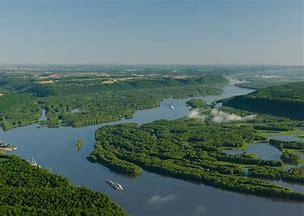
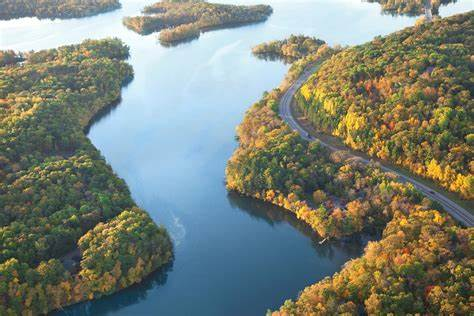
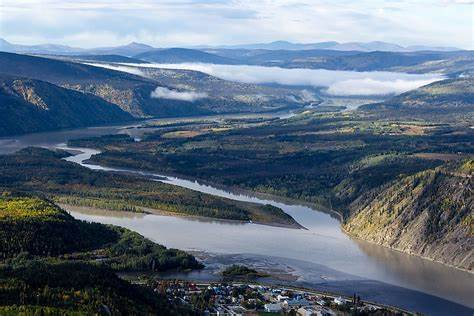

Missouri
The Missouri River is the longest river in the United States. Rising in the Rocky Mountains of the eastern Centennial Mountains of southwestern Montana, the Missouri flows east and south for 2,341 miles (3,767 km) before entering the Mississippi River north of St. Louis, Missouri. The river drains a sparsely populated, semi-arid watershed of over 500,000 square miles (1,300,000 km), which includes parts of ten US states and two Canadian provinces. For more than 12,000 years, people have depended on the Missouri River and its tributaries as a source of sustenance and transportation. More than ten major groups of Native Americans populated the watershed, most of whom lead nomadic lifestyles and depend on the vast bison herds that roam the Great Plains.
Mississippi
The Mississippi River is the second longest river and the head of the second largest drainage system in North America, second only to the Hudson Bay drainage system. From its traditional source at Lake Itasca in northern Minnesota, it flows generally south for 2,340 miles (3,770 km) to the Mississippi River Delta at the Gulf of Mexico. Along with its many tributaries, the Mississippi’s watershed is located along U.S. 32. The word Mississippi itself comes from missi zippy, which is a French translation of the Anishinaabe (Ojibwe or Algonquin) name for the river.
Yukon
The Yukon River is a major watercourse in northwestern North America. From its source in British Columbia, Canada, it flows through Canada’s Yukon Territory (named after the river itself). The lower half of the river flows west through the US state of Alaska. The river is 3,190 kilometers (1,980 mi) long and drains into the Bering Sea in the Yukon–Kuskokwim Delta.